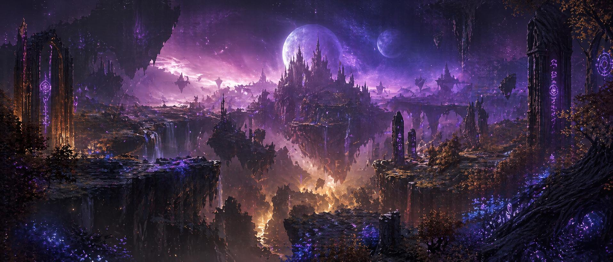
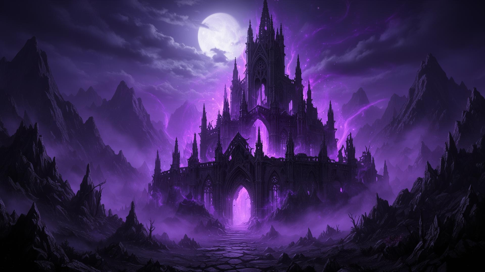
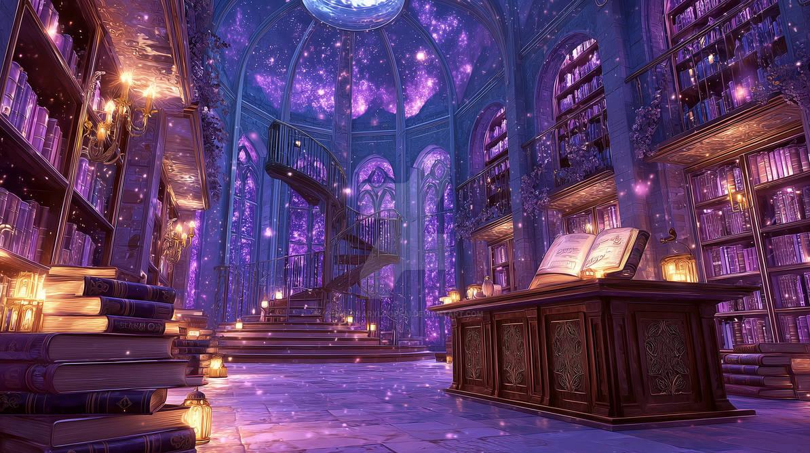

O que é Cultura Geek?
A cultura geek representa um conjunto de interesses relacionados à tecnologia, entretenimento, fantasia, ficção científica e diferentes formas de expressão artística.
Ela reúne pessoas que compartilham a paixão por universos fictícios, personagens, histórias e produções que despertam criatividade e imaginação.
Com o crescimento da internet e das comunidades digitais, a cultura geek ganhou ainda mais espaço, conectando admiradores de diferentes partes do mundo.

Animes e Mangás
Os animes são animações originárias do Japão que apresentam diferentes estilos visuais, narrativas e gêneros, conquistando públicos de várias idades.
Os mangás são histórias em quadrinhos japonesas que apresentam ilustrações e narrativas próprias, explorando temas como aventura, fantasia e mistério.
Essas produções possuem grande influência na cultura popular e inspiram jogos, filmes, produtos e outras formas de entretenimento.

Filmes e Séries
Filmes e séries fazem parte da cultura geek por apresentarem histórias que exploram universos imaginários e personagens marcantes.
A ficção científica apresenta possibilidades relacionadas ao futuro, à tecnologia, à exploração espacial e à humanidade.
Já a fantasia utiliza elementos mágicos, criaturas extraordinárias e mundos fictícios para construir narrativas envolventes.

Fantasia e Mistério
Universos Fantásticos
Mundos imaginários, criaturas mágicas, reinos misteriosos e grandes aventuras fazem parte das histórias de fantasia.
Mistério e Suspense
Narrativas de mistério apresentam enigmas, acontecimentos inesperados e descobertas que despertam curiosidade.
A importância da comunidade Geek
As comunidades geek permitem que pessoas com interesses semelhantes compartilhem experiências, conhecimentos e opiniões sobre suas produções favoritas.
Eventos, convenções e encontros também possibilitam conhecer novos trabalhos, artistas e criadores envolvidos com esse universo.
A cultura geek continua se transformando, acompanhando as mudanças tecnológicas e conquistando novos admiradores ao redor do mundo.